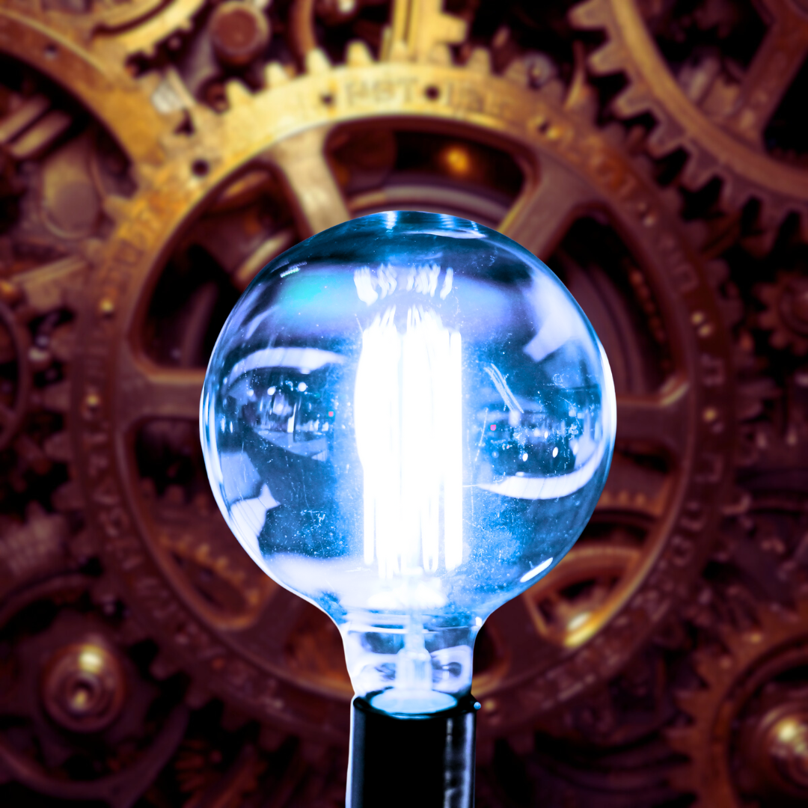

Overview
arrow_downward

Introduction
This experiment explores converting mechanical energy into electrical energy using a simple generator setup. It demonstrates how motion, such as turning a rotor, can produce measurable electricity.
Objectives
- To demonstrate the conversion of mechanical energy into electrical energy using a generator.
- To show how mechanical energy can produce heat through friction (thermal energy).
- To observe the transfer of mechanical energy into kinetic energy, such as motion in windmill blades.
- To understand the principles behind energy transformation and conservation in practical devices.
Materials
- Small hand-crank generator or motor
- Connecting wires and clips
- LED Bulb or small light indicator
- Fan or windmill blades for kinetic conversion
- Metal surface or friction block for thermal conversion
- Measuring tools (multimeter, thermometer, stopwatch)
- Support stand or base to hold setup
- Notebook or digital log for recording results
Quick Info
| Input Energy | Output Energy | Example Device | Explanation | Mechanical | Thermal | Brakes in a car | Friction converts motion into heat |
|---|---|---|---|
| Mechanical | Electric | Generator | Rotating turbine converts motion into electric current |
| Mechanical | Kinetic | Windmill blades | Wind's motion transfers to rotating blades |
This table is espeically useful for understanding the 3 types of energy the experiment conducted will cover.